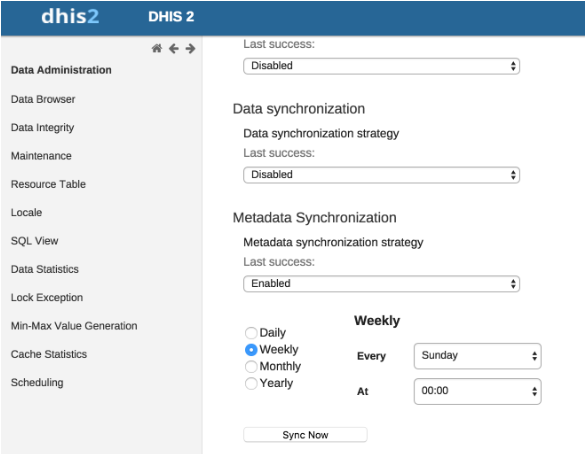

Go to Settings app > Synchronization. Under Synchronization Settings, enter the remote server URL, username and password and click Save.
This feature has ability to send email notifications to notify users in case of successful or unsuccessful metadata sync. There are two steps to configure e-mail settings.
Go to Settings app > Email. Enter the details of smtp server and other details of the "From" sender of the e-mail.
We need to set an email address which will be notified of the status of the Metadata Sync task. Go to Settings app > Server. Enter the System notifications email address.
Now go to the Data Administration app and configure Metadata Sync Task as mentioned in Section 28.2, “Metadata Sync Task”. There are four different time periods that you can select for scheduling. Daily, Weekly, Monthly and Yearly. And time for each can be set appropriately.
|  |